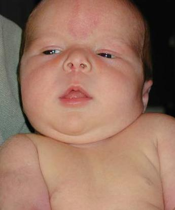

 Elizabeth Emma Rogers officially joined the human race at 12:15 on the morning of 14 July 2000, weighing 8 lb 14&1/4 oz (4.03kg). Mother and baby were both happy and healthy immediately after the birth; Dad was happy but dead tired, having not had more than four or five hours sleep in the previous few nights.
While Jan and Liz were still in the hospital, Anna kept telling us that she is "very excited" to have a new baby sister, and couldn't wait for baby Liz to come home. Anna met her new sister that very afternoon, and it was wonderful to see the two of them together, even though all Liz did was sleep. We took some cute pictures of Liz sitting on Anna's lap while Anna was sitting on mine. (This was actually Anna's idea; one of Anna's friends has such a picture.) I have a feeling that Anna is going to turn out to be a terrific big sister. Liz doesn't know it yet, but she's very lucky.
Liz was born via elective Caesarian section, since indications were that the baby might weigh 10 pounds or more, with the associated risk of complications for both mother and child if Jan had decided to go for a vaginal birth. If Liz's estimated weight, 4468g plus-or-minus 20% (!), had been just 32 grams higher, the doctor wouldn't have even given her the choice.
We're all very glad that the waiting is over, and we can hold and coo over our newest daughter. (Now I have to reprogram my head to stop talking about "my daughter" and say "my older/younger daughter" instead, use plurals, etc.)
Around two o'clock in the morning, shortly after Liz turned one month old, I was changing her diaper when there was a power failure. Fortunately, I had finished wiping by that time, but it was pitch dark. Since Liz usually gets changed on the rug in the dining room, I didn't want to go get a flashlight, because I was afraid I might step on her (though if I found the flashlight, and it still worked, the return trip wouldn't be so much of a problem). And if I picked her up and carried her, bare buns and all, I might bump into something with her, or she might decide to cut loose on the way -- you decide which is worse. Well, OK, bumping the baby is worse, but Liz has already surprised me on more than one occasion, and it's enough of a pain to clean up after even when it's light and the mess is confined to the changing area.
So, while still in the dark, I felt around for a new diaper, hoping I had remembered where I put the old one, and wrapped it around the punkin buns and taped it by braille. By then, my eyes had adjusted to the trickle of light coming in through the drapes, so I picked Liz up, and we managed to get to the flashlights without bumping either of us.
No sweat for an experienced dad, eh?